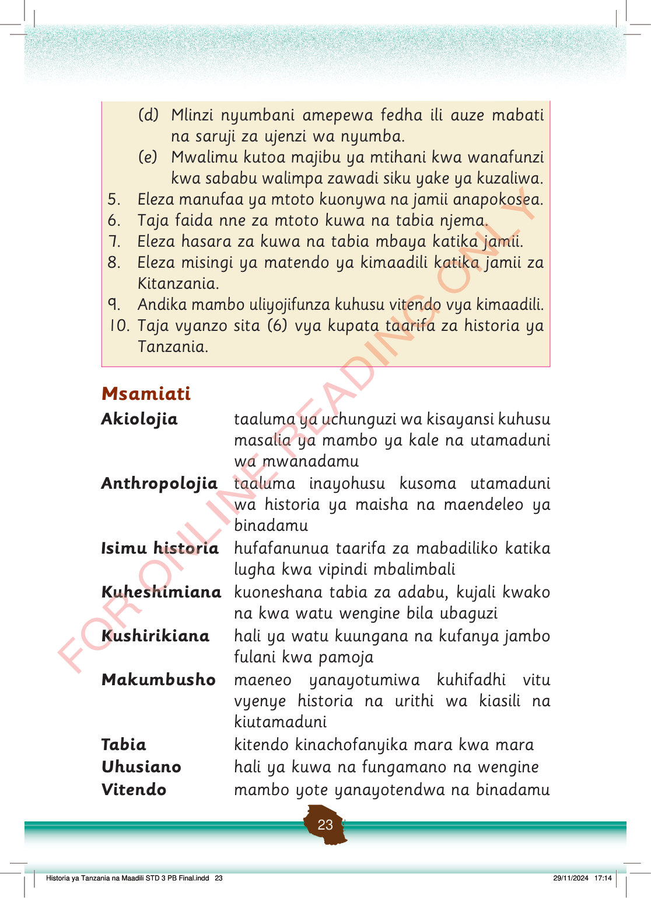

(d) Mlinzi nyumbani amepewa fedha ili auze mabati na saruji za ujenzi wa nyumba.
(e) Mwalimu kutoa majibu ya mtihani kwa wanafunzi kwa sababu walimpa zawadi siku yake ya kuzaliwa.
5.
Eleza manufaa ya mtoto kuonywa na jamii anapokosea.
6.
Taja faida nne za mtoto kuwa na tabia njema.
7.
Eleza hasara za kuwa na tabia mbaya katika jamii.
8.
Eleza misingi ya matendo ya kimaadili katika jamii za Kitanzania.
9.
Andika mambo uliyojifunza kuhusu vitendo vya kimaadili.
10.
Taja vyanzo sita (6) vya kupata taarifa za historia ya Tanzania.
Msamiati
Akiolojia
taaluma ya uchunguzi wa kisayansi kuhusu masalia ya mambo ya kale na utamaduni wa mwanadamu
Anthropolojia
taaluma inayohusu kusoma utamaduni wa historia ya maisha na maendeleo ya binadamu
Isimu historia
hufafanunua taarifa za mabadiliko katika lugha kwa vipindi mbalimbali
Kuheshimiana
kuoneshana tabia za adabu, kujali kwako na kwa watu wengine bila ubaguzi
Kushirikiana
hali ya watu kuungana na kufanya jambo fulani kwa pamoja
Makumbusho
maeneo yanayotumiwa kuhifadhi vitu vyenye historia na urithi wa kiasili na kiutamaduni
Tabia
kitendo kinachofanyika mara kwa mara
Uhusiano
hali ya kuwa na fungamano na wengine
Vitendo
mambo yote yanayotendwa na binadamu